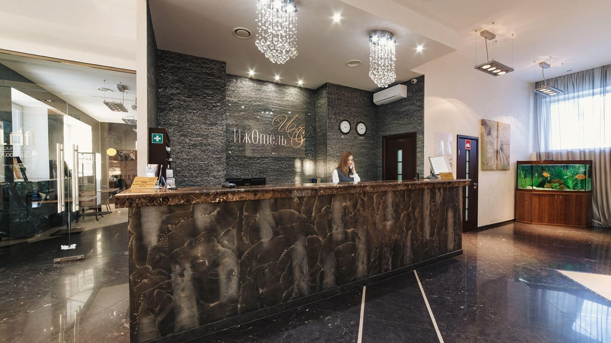

Какие достопримечательности посетить
Куда сходить погулять
Где поесть
Где остановиться
Menu
Где остановиться
Гостиница Космос
×
Этнокомплекс Бобровая долина
×

Гостиничный комплекс Ижотель
×
Гостиница АМАКС Центральная
×
Отель Дерябин
×
Отель Панорама
×
Премьер отель
×
Гостевой дом Мустанг
×